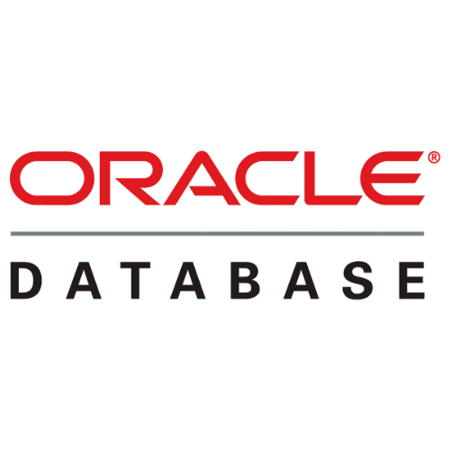

O MySQL é um dos bancos de dados mais populares do mundo, muito utilizado em sites, sistemas web e aplicações empresariais. Ele é conhecido pela sua velocidade, estabilidade e facilidade de integração com diferentes linguagens de programação, como PHP, JavaScript e Python. Além disso, é gratuito na maioria dos casos e possui uma grande comunidade de suporte, o que facilita a solução de problemas e o desenvolvimento de projetos.
PostgreSQL:
O PostgreSQL é considerado um dos SGBDs mais robustos e avançados existentes. Ele oferece muitos recursos poderosos, como suporte a dados complexos, funções personalizadas, alto nível de segurança e total compatibilidade com padrões SQL. É muito usado em sistemas que exigem consistência, precisão e escalabilidade, sendo ideal para aplicações financeiras, científicas e corporativas de grande porte.

Oracle Database:
O Oracle Database é um banco de dados amplamente utilizado por grandes empresas devido ao seu nível avançado de segurança, desempenho extremamente alto e suporte corporativo completo. Ele oferece ferramentas profissionais para administração, replicação, backup e recuperação de dados, sendo muito comum em bancos, governos e grandes corporações onde qualquer falha pode causar grandes prejuízos.
SQL Server (Microsoft):
O SQL Server é muito presente em ambientes corporativos, especialmente aqueles que já utilizam tecnologias Microsoft, como Windows Server, Azure e .NET. Ele oferece grande integração entre ferramentas de desenvolvimento, alta performance, recursos de segurança e facilidade na administração. É amplamente usado em empresas de médio a grande porte que necessitam de confiabilidade e suporte técnico oficial.
MongoDB:
O MongoDB é um banco de dados NoSQL que armazena informações em documentos no formato JSON, o que permite grande flexibilidade na estrutura dos dados. Ele é ideal para aplicações que lidam com grandes volumes de informação, como redes sociais, lojas virtuais e sistemas em tempo real. Sua capacidade de escalar horizontalmente e lidar com dados não estruturados o torna muito popular no desenvolvimento moderno.
Firebase:
O Firebase, desenvolvido pelo Google, é muito utilizado em aplicativos mobile e sistemas web que precisam de sincronização em tempo real. Ele oferece banco de dados em nuvem, autenticação, hospedagem e diversas ferramentas integradas, facilitando muito o trabalho de desenvolvedores. É especialmente útil para aplicações que precisam funcionar de forma rápida, segura e integrada entre diferentes dispositivos.